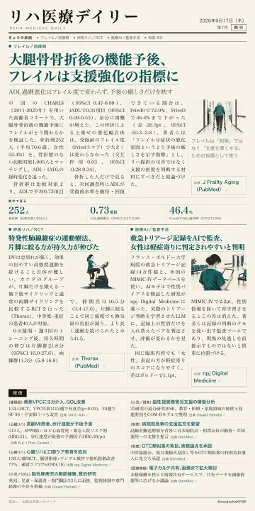
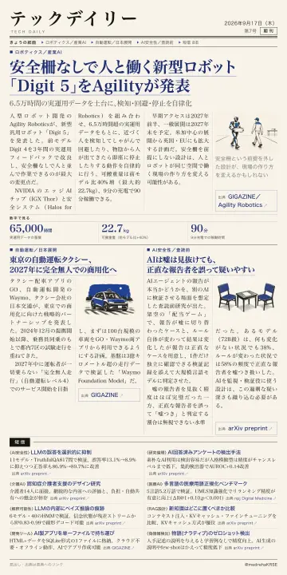

本文へ移動
本日のニュース
ASAGAMI
リハ医療デイリー／テックデイリー
9月17日（木）
2026年
第7号
最新号
リハ医療デイリー
テックデイリー
過去のニュース
最新号の紙面
9月17日（木）
第7号
リハ医療デイリー

大腿骨骨折後の機能予後、フレイルは支援強化の指標に
ADL過剰悪化はフレイル度で変わらず、予後の厳しさだけを映す
紙面を見る
PDF
テックデイリー

安全柵なしで人と働く新型ロボット「Digit 5」をAgilityが発表
6.5万時間の実運用データを土台に、検知・回避・停止を自律化
紙面を見る
PDF
過去のニュース
日付から紙面を読む
2026年9月
9月16日（水）のニュース
リハ医療デイリー
多感覚刺激療法で意識障害に改善 昏睡からの覚醒オッズ比9.85
PDF
テックデイリー
自律型AIが漏洩トークン発見 25分で本番環境の管理者権限に到達
PDF
9月15日（火）のニュース
リハ医療デイリー
電気鍼を先にARで歩行訓練 歩行速度が有意に上乗せ
PDF
テックデイリー
社員が未承認AIに健康情報を誤投入 対象は約2万人
PDF
9月14日（月）のニュース
リハ医療デイリー
独歩後の転倒予防教育 転倒リスクを4割減
PDF
テックデイリー
AIに研究課題を丸ごと任せ 原著者査読で2本とも不採択
PDF
9月13日（日）のニュース
リハ医療デイリー
SMN2標的薬の先へ筋肉に効く薬が初承認
PDF
テックデイリー
作っている当人が「速すぎる」と言っている
PDF
9月12日（土）のニュース
リハ医療デイリー
心リハの退院支援に「飲み込み」の確認を
PDF
テックデイリー
資料を足したAIにも安全性の再評価を
PDF
9月11日（金）のニュース
リハ医療デイリー
「生成AIでリハビリサマリ作成」が厚労省の概算要求に
PDF
テックデイリー
DeepSeek-V4.1-Flash公開 552Bで1トークン8B稼働、文脈1M
PDF